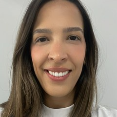

Início · Cuidados · Ecocardiograma
Ecocardiograma: o coração visto por dentro, sem cortes.
É um ultrassom do coração. Mostra o tamanho das cavidades, a força do músculo e o funcionamento das válvulas. A indicação é individual, definida em consulta.

Entenda
O que é o ecocardiograma
É um exame de ultrassom, sem radiação e sem dor. Um aparelho com gel é passado sobre o peito e forma imagens do coração em movimento.
A Dra. Clara foi fellow em ecocardiografia no Hospital Ana Nery, além da residência em Cardiologia no Sírio-Libanês.
O que mostra
O que o exame mostra
Força do coração
A fração de ejeção e a contração do músculo.
Válvulas
Se abrem e fecham bem, e se há vazamento ou estreitamento.
Tamanho
Das cavidades e da espessura das paredes.
Pericárdio
A membrana que envolve o coração e se há líquido.
Indicação
Quando é pedido
- Falta de ar, inchaço ou cansaço sem explicação.
- Sopro no coração.
- Pressão alta de longa data.
- Antes, durante e depois de alguns tratamentos contra o câncer, no acompanhamento de cardio-oncologia.
A indicação é individual, definida em consulta.
No dia
Como é feito
- PreparoEm geral, não precisa de jejum. Confirme as orientações do local do exame.
- O exameDeitado, de lado; dura em torno de meia hora.
- O resultadoO laudo é levado à consulta e explicado.
Dúvidas frequentes
Perguntas comuns
O ecocardiograma dói?
Não. Pode haver um leve desconforto pela pressão do aparelho no peito.
O exame é feito no consultório?
Confirme com a equipe onde o exame é realizado.
Preciso de pedido médico?
Sim, o exame é pedido conforme a avaliação clínica.
Agende
Cuidar do coração começa por uma boa conversa.
Consulta com hora marcada em Salvador. Fale com a equipe pelo WhatsApp (71) 98117-0756.